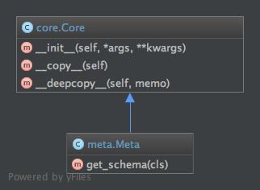

Meta Module¶
Module containing definition for schemata type and base validation functions.
Contents
Classes¶
MetaSchemaType¶
- class ontic.meta.Meta(*args, **kwargs)¶
Interface for type definition of Ontic schema defined classes.
- Dict Style Initialization
Meta() -> new empty Meta
- Meta(mapping) -> new Meta initialized from a mapping object’s
(key, value) pairs
Meta(iterable) -> new Meta initialized as if via:
d = Meta() for k, v in iterable: d[k] = v
Meta(**kwargs) -> new Meta initialized with the name=value pairs in the keyword argument list. For example:
Meta(one=1, two=2)
- classmethod get_schema() ontic.schema.Schema¶
Returns the schema object for the a given type definition.
- Returns
The schema metadata definition for a
PropertySchemaor aontic.OnticTypederived child class.- Return type
ontic.Schema
Functions¶
enum_validation¶
- ontic.meta.enum_validation()¶
Validate a non-collection property for value in an enumeration set.
- Parameters
property_schema – The property schema to utilize for validation.
value – The value of the property to be validated.
- Returns
True if the validation is successful, else False.
execute_collection_validators¶
- ontic.meta.execute_collection_validators()¶
Method to execute a list of validators on a given collection.
- Parameters
member_value – The member of the collection property to validate.
property_schema – The property schema to utilize for validation.
validators – A list of validation methods to execute.
value_errors – A list of errors found for a given value. If any given validator method fails, it will append it error message to the value_errors list.
max_validation¶
- ontic.meta.max_validation()¶
Validates a non-collection property for maximum allowable value.
- Parameters
property_schema – The property schema to utilize for validation.
value – The value of the property to be validated.
- Returns
True if the validation is successful, else False.
min_validation¶
- ontic.meta.min_validation()¶
Validate a non-collection property for minimum allowable value.
- Parameters
property_schema – The property schema to utilize for validation.
value – The value of the property to be validated.
- Returns
True if the validation is successful, else False.
non_none_singular_validation¶
- ontic.meta.non_none_singular_validation()¶
Method to validate an object value meets schema requirements.
This method validates non-collection properties. The method should only be used for non-None values.
- Parameters
property_schema – The schema definition for the target property.
value – The value to be tested against the given schema.
value_errors – A list of the validation errors discovered. The value errors will be added to if the given value fails validation.
validate_collection_members¶
- ontic.meta.validate_collection_members(property_schema: OnticProperty, value: Any, value_errors: list) NoReturn¶
Method to validate the members of a collection.
This method only operates on list and set collection types.
- Parameters
property_schema (
ontic.OnticProperty) – The property schema to utilize for validation.value (list, set) – The collection whose members will be validated.
value_errors (list<str>) – A list of errors found for a given collection. If any members fail validation, the error condition will be listed in value_errors list.
- Return type
None
validate_member_enum¶
- ontic.meta.validate_member_enum()¶
Validate a member of a collection is within a defined enumeration.
- Parameters
member_value – The member of the collection property to validate.
property_schema – The property schema to utilize for validation.
value_errors – A list of errors found for a given value. If the validate fails, then an error message is added to the value_errors list.
validate_member_max¶
- ontic.meta.validate_member_max()¶
Validate a member of a collection for maximum allowable value.
- Parameters
member_value – The member value of the collection property to validate.
property_schema – The property schema to utilize for validation.
value_errors – A list of errors found for a given value. If the validation fails, then an error message is added to the value_errors list.
validate_member_min¶
- ontic.meta.validate_member_min()¶
Validate a member of a collection for minimum allowable value.
- Parameters
member_value – The member value of the collection property to validate.
property_schema – The property schema to utilize for validation.
value_errors – A list of errors found for a given value. If the validation fails, then an error message is added to the value_errors list.
validate_member_regex¶
- ontic.meta.validate_member_regex()¶
Validate a member of a collection against a defined regex.
- Parameters
member_value – The member value of the collection property to validate.
property_schema – The property schema to utilize for validation.
value_errors – A list of errors found for a given value. If the validation fails, then an error message is added to the value_errors list.
validate_member_type¶
- ontic.meta.validate_member_type()¶
Validate a member of a collection is of a given type.
- Parameters
member_value (object) – The member value of the collection property to validate.
property_schema (
ontic.OnticProperty) – The property schema to utilize for validation.value_errors (list<str>) – A list of errors found for a given value. If the validation fails, then an error message is added to the value_errors list.
- Return type
None
validate_non_none_value¶
- ontic.meta.validate_non_none_value(property_schema: OnticProperty, value: Any, value_errors: list) NoReturn¶
Validates an Ontic object value that is not None.
This method validates singular and collection values. This method does not perform Required validation, as it is assumed that the value is not None.
- Parameters
property_schema (
ontic.OnticProperty) – The property schema to utilize for validation.value (object) – The non-None value to be validated.
value_errors (list<str>) – A list of errors found for a given value. If any given validator method fails, it will append it error message to the value_errors list.
- Return type
None
validate_value¶
- ontic.meta.validate_value(property_schema: OnticProperty, value: Any) list¶
Method to validate a given value against a given property schema.
- Parameters
property_schema – The property schema that contains the validation rules.
value – The value that is to be validated.
- Returns
A list that is utilized to collect the errors found during schema validation.